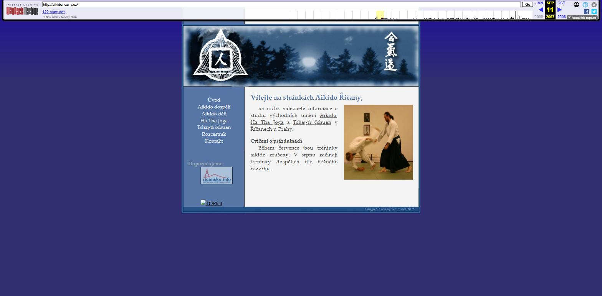
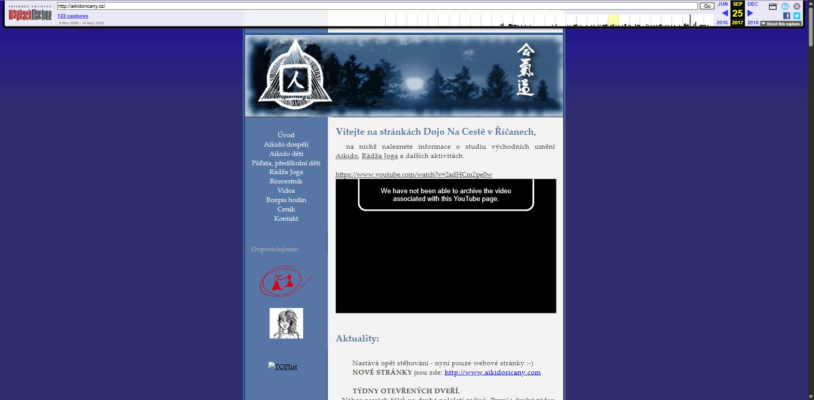
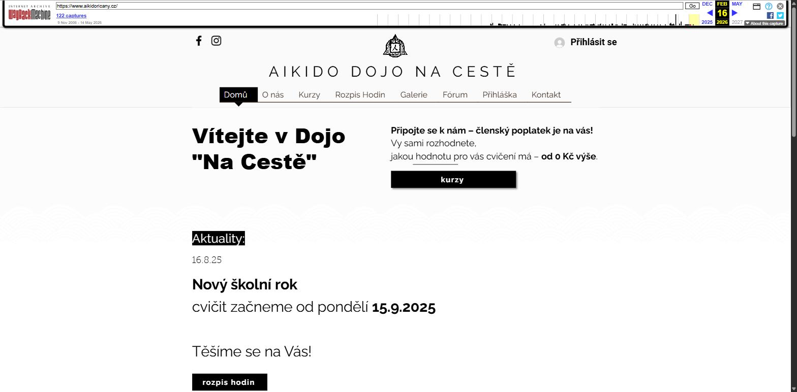

Náš web měl v roce 2026 už dvacet let — jen málokdo to ale mohl tušit, protože každá jeho přestavba smazala kus paměti té předchozí. Prošli jsme si přes 50 archivovaných verzí ve Wayback Machine a poskládali z nich to, co dnešní stránky už nevědí.
Než se klub jmenoval „Dójó Na Cestě“, byl to spolek s úplně jiným jménem — a s jiným webem, který si ho pamatuje.
Nejstarší dochovaná verze webu je z listopadu 2006 a mluví o klubu jako o Aikido Kenkyukai Říčany — občanském sdružení napojeném na Aikido Kenkyukai Praha a Českou asociaci aikida (ČAA), a přes ni přímo na Hombu Dójó v Japonsku, které založil Ó-sensei Morihei Ueshiba. Stránka měla i vlastní „rozcestník“ s odkazy na aikidové federace v Česku, na Slovensku, ve Švýcarsku, v Itálii i Japonsku.
Prvním učitelem byl sensei Michal „Lachim“ Šíp, který klub podle dobových stránek učil aikido „od samého začátku bez jakéhokoli nároku na odměnu“. Miroslav Skala — dnešní vedoucí a instruktor — se v archivu poprvé objevuje už v roce 2007, ale jako někdo, komu klub děkuje za „nemalou finanční podporu“, ne jako učitel. Tu roli přebírá až o mnoho let později.
Klub od začátku hostil i cvičence zvenčí — nejstarší dohledaná zmínka z listopadu 2006 zve na stáž Judo pro Aikidisty pana Vladimíra „Kazika“ Lorenze (7. dan judo), vedle pravidelných stáží Miroslava Kodyma.

Skutečné snímky obrazovky z Wayback Machine — ne rekonstrukce.
Ručně kódovaný web od Petra Mašáta. Tmavě modrá, kaligrafie 合気道, postranní menu. Aikido, Ha Tha Jóga, Tchaj-ři Čchüan.
zobrazit v archivu
Stejná kostra, o dekádu více obsahu — jedenáct let aktualit nastěhovaných na jednu stránku bez jediného smazání. Poslední nádech před Wixem.
zobrazit v archivu
Přechod na Wix a nové jméno Dójó Na Cestě. Tato verze z února 2026 je archivně nejbohatší — má aktuality sahající až do roku 2022, které dnešní web už nemá.
zobrazit v archivuČtyři věci, které se u nás dřív pravidelně cvičily nebo pořádaly, a na dnešním webu po nich není ani zmínka.
Tai Chi bylo na dójó vedle aikida a jógy třetí pravidelnou disciplínou skoro celou první dekádu — v pondělí 17:40–19:00 a ve středu 19:30–20:50.
„Tchaj-ři čchüan je umění, jak měkkostí zvládnout tvrdost, klidem agresivitu a jak jemností překonat hrubost.“
V červnu 2011 o něm dokonce vznikl krátký film. Beze zmínky o důvodu z webu zmizelo mezi lety 2015 a 2017.
zdroj: web.archive.org, 2013Předchůdkyně dnešní „Jógy“ — stejná disciplína, jiné jméno a jiný ceník, ještě bez filosofie „kolik chcete“.
| 1 rok (10 měsíců) | 4 500,− Kč |
| 1 měsíc (2×/týden) | 500,− Kč |
| 1 měsíc (1×/týden) | 300,− Kč |
| 1 trénink | 100,− Kč |
Kolem roku 2012 byla přejmenována na „Rádža Jógu“ a dostala nový, jednodušší ceník.
zdroj: web.archive.org, 2009Víkendový seminář vícehlasého zpěvu vedený Mgr. Zuzanou Vláčinskou (muzikoložka FF UK, autorka zpěvníku koled „Poslyšte s radostí“, 2005).
„Vítáni jsou i ti, kteří mají o sobě informaci, že zpívat neumí: pokud se podaří odstranit bloky a ztuhlé návyky, pěkně zpívat dovede každý.“
Konalo se 22.–23. 5. 2010, cena 1 800 Kč včetně možnosti přespání. Jednorázová akce, která se už neopakovala.
zdroj: web.archive.org, 2014Měsíční setkání — vždy poslední neděli v měsíci od 19:00. Nejstručnější stránka celého archivu, ale reálná pravidelná aktivita, která z rozvrhu i menu zmizela už po roce či dvou.
Zajímavost: podobná praxe se pod jménem baionšómjó (zpěv s vibrací) objevuje znovu od roku 2018 — ale koná se v jiném dójó, v Praze-Libuši, a dnešní web ji vůbec nezmiňuje.
zdroj: web.archive.org, 2012Přesně jak to dřív dělal starý web: jeden rolling seznam, nejnovější příspěvek nahoře, nic se nemaže. Zatím jsou to naše rekonstrukce — v editoru je můžete nahradit skutečným původním zněním a doplnit fotky, které se nám nepodařilo najít.
Načítám kroniku…
Dvě věci, které archiv říká jinak než současný text na stránce O nás. Nic jsme kvůli tomu nepřepisovali — jen to zaznamenáváme, ať se dá později rozhodnout, co s tím.
Celá tahle stránka vychází z veřejně dostupných záznamů na Wayback Machine — žádný fakt jsme si nevymysleli, jen jsme je posbírali z 54 archivovaných verzí webu z let 2006–2026.